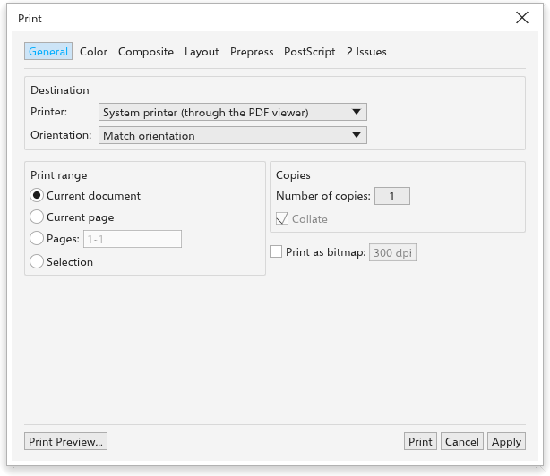

لم تُترجم هذه الصفحة بعد وتُعرض بالإنجليزية.
Printing a drawing
Choose File > Print (Ctrl+P). TraceDraw builds a PDF of the sheets and opens it in your system's viewer, where you choose the printer and print. In the browser version, the PDF is downloaded.

General
- Destination: the printer, a PDF file or a PostScript file.
- Orientation: match the layout, portrait or landscape.
- Print range: the whole document, the current page, a list of pages (such as
1-3, 5, 8-), or the selected objects. - Copies, collated as whole sets or not.
- Print as bitmap: each sheet becomes one picture at the resolution you give.
Color
- Composite prints all colors on each sheet; Separations prints one gray page per ink (cyan, magenta, yellow, black, then each spot ink).
- Convert spot colors to CMYK prints spot inks as their CMYK mix.
Composite
- Print text in black.
- Always overprint black: full black fills and outlines print over the colors beneath.
Layout
- As in document, Fit to page, or Scale to a percentage.
- Bleed limit: how far beyond the page objects print (4 mm at first).
- The imposition: several pages on one sheet, or a booklet, whose pages are paired for folding, with the sheet size and the gap between pages. A sketch shows the result. For the back of double-sided cards, tick Back side: the pages run right to left on the sheet, so each one prints behind its front, and the text is not mirrored. Keep page size stops the pages from shrinking on a fixed sheet to make room for the marks. In Print Preview, drag on the sheet to move the page information.
Prepress
- Invert and Mirror the whole sheet, for film.
- Print file information (the drawing's name or your own text, the page numbers, sheet number and date) and Print page numbers.
- Crop marks (and fold marks for booklets), Registration marks, Color bars and Densitometer scale.
PostScript and issues
With a PostScript file as the destination, the PostScript tab sets the language level (2 or 3). The Issues tab shows what the preflight check finds; see Preflight.
Apply keeps the settings for the next time; see Global options for the defaults.
Print preview
File > Print Preview, or Print preview in the Print dialog box, shows the sheets exactly as they will print, with the imposition and the marks. The bar at the top has Print, Close, the sheet shown with previous and next (PgUp, PgDn), the plate to show while printing separations, and the zoom. The options on the left change the sheets at once.
Other ways to print
- File > Send To saves a PDF to your desktop or documents folder, or attaches it to an email.
- Publish to PDF writes a PDF with full control of its settings; see Publishing to PDF.